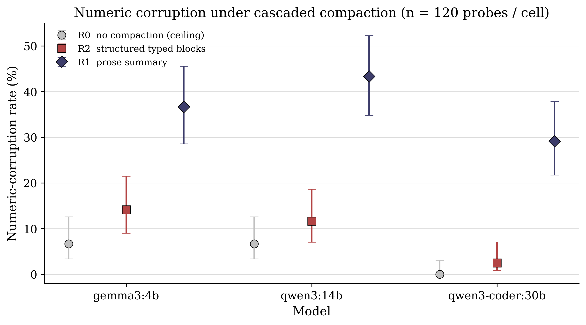
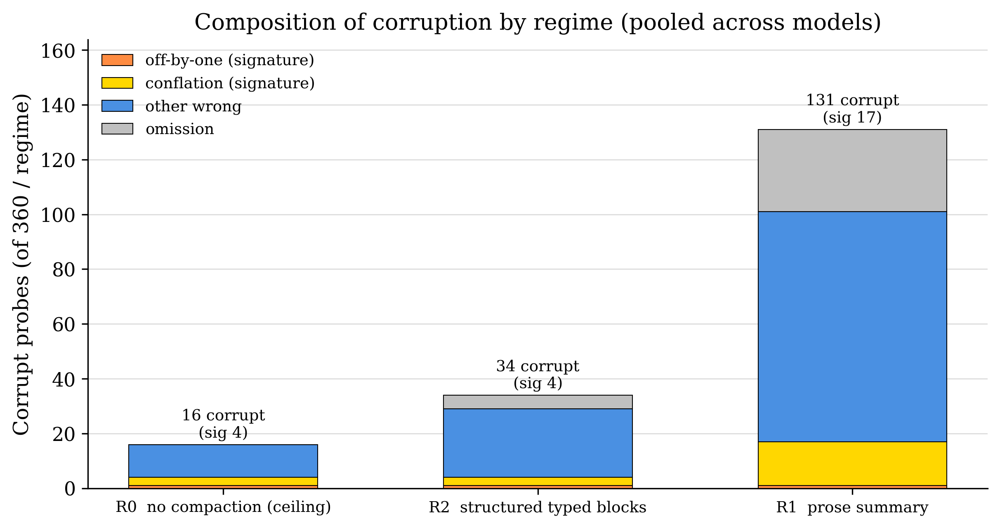

Typed State Beats Prose
A Pre-Registered Measurement of Numeric Corruption Under Agent Context Compaction
Abstract
Context compaction—replacing an agent’s running transcript with a shorter summary—is now background-automatic in major agent products, yet the format of the compacted state is chosen by convention rather than measurement. We pre-register and run a matched-budget, temperature-0, cascaded-compaction experiment in which the summary format is the sole manipulated variable: at each checkpoint an agent replaces its transcript either with a flowing prose summary (R1) or with a typed state block (R2), both capped at the same token budget, against a no-compaction ceiling (R0). Ground truth is known by construction on a synthetic numeric recall-and-combination task, run across three open-weight local models spanning 4B–30B parameters (15 episodes × 8 probes × 3 models × 3 regimes = 1,080 probes); frontier hosted models are untested and the generalization claim is bounded to the measured range. Pooled numeric-corruption rate is 36.4% under prose versus 9.4% under typed blocks, against a 4.4% no-compaction ceiling; the pre-registered paired exact McNemar test (R1 vs R2, identical probes) gives b = 11, c = 108, two-sided p = 3.524×10−21, with the direction favoring typed state in every model. Realized compaction budgets match to within about one percent (219.2 vs 221.4 tokens), so the effect is format, not budget. A write-time decomposition locates most of the prose deficit at the moment of compaction: typed blocks retain 99.8% of entity values across cascaded checkpoints, prose 65.2%. The implication for agent builders is direct: never re-narrate numbers in prose when a quotable typed slot will do.
Keywords: context compaction, agent memory, structured state, numeric fidelity, pre-registration, summarization
Introduction
Long-horizon language-model agents accumulate more transcript than fits in a context window, and the dominant response is compaction: at some threshold the running history is replaced by a shorter machine-written summary and work continues from that summary. Compaction now runs automatically in shipping products—vendor guidance treats it as a standard mitigation alongside structured note-taking and sub-agents (Rajasekaran et al. 2025), and vendors increasingly train against its failures (Cassano and Rush 2026).
Practitioner trust has not kept pace with adoption. The same guidance that recommends compaction warns that “overly aggressive compaction can result in the loss of subtle but critical context whose importance only becomes apparent later” (Rajasekaran et al. 2025); bug reports describe agents that lose a plan entirely after a compaction step (anthropics/claude-code issue #24686 2026); and a July 2026 survey of the area states plainly that “the repeated compaction that agents actually perform is almost never measured” (Colaco and Lahjouji 2026). The gap is not whether compaction loses information—long-context degradation is well documented (Liu et al. 2024; Hong et al. 2025)—but which design choices control the loss, and by how much.
This note isolates one such choice: the format the agent writes its compacted state in. The motivating case is a documented incident in our own research workflow (internal operations log, February 2026), recorded at the level of abstraction fixed in our pre-registered protocol: an orchestrating agent’s prose summary reported a computed value off by one and conflated three related quantities—a base value, a neighboring value one unit away, and a combined sum—into a single incorrect claim, while every computed artifact on disk remained correct. The codified fix was to require verbatim-quotable structured results blocks in place of prose retellings, but that fix had never been measured against the prose alternative it replaced at matched token budgets. We measure it.
We compare prose summaries against typed state blocks under identical token budgets, at temperature zero, with compaction cascaded (each checkpoint’s state is produced from the previous state plus new material, so the iterated lossy re-encode is itself under test), on a task whose numeric ground truth is known by construction. The design was pre-registered and frozen before implementation.
Contributions.
The first format-controlled, budget-matched, ground-truth measurement of numeric corruption under repeated agent compaction: prose vs typed pooled, ceiling , with a pre-registered paired test () and unanimous per-model direction (Section 4).
A corruption-class taxonomy that separates near-miss drift (off-by-one, conflation—the incident signature) from outright loss (other-wrong, omission), showing prose fails predominantly by losing values outright, and conflates at more than five times the structured rate when it keeps them (Section 4, Table 3).
A write-time versus read-time decomposition locating most of the prose deficit at the compaction step, not the answer step ( vs value retention).
Open artifacts: protocol, seeded tasks, a stdlib-only runner, every raw call log, scoring code, and scored results (Section 6).
The hypothesis that structure beats prose is not itself novel; it is the stated position of several converging lines of work (Section 2). The contribution here is its controlled isolation and measurement for numeric state under these controls.
Related work
Three flanking measurements.
Three recent works measure adjacent effects and bound our contribution precisely. AgingBench (Zhu et al. 2026), in its Appendix D.2 typed-state overlay, independently names the exact failure mode—prose compaction condenses delta-updated numeric quantities into noun phrases that lose the arithmetic structure needed to update them—and runs a (lossy vs careful compaction prompt typed JSON sidecar on/off; one model, one scenario, ) showing the sidecar cuts accumulator error by – while careful prompting alone does not. Crucially, its structured state is written by a deterministic parser extracting generator-emitted sentinel tokens, so whether an LLM writing structured notes retains numbers better than an LLM writing prose—our core variable—is untested; the sidecar is additive rather than budget-matched, the metric is an error-magnitude rather than a corruption rate, and the authors describe the probe as a sketch. Factory.ai’s production evaluation (Factory Research 2025) scores schema-sectioned anchored summarization above vendor prose compaction on production messages (overall vs and ; accuracy vs and ), attributing the gain to structure forcing preservation—but whole heterogeneous pipelines differ between arms, grading is by LLM judge rather than ground truth, budgets are only approximately matched, and no numeric-corruption rate is reported. Governance Decay (Chen 2026) measures fact survival with binary ground truth across episodes, finding that compaction silently erases in-context safety constraints (violations –) and that quarantining critical state from lossy summarization (its Constraint Pinning mitigation) restores —the same structural argument as typed state blocks, but for policy text rather than numbers, and without a format-controlled, budget-matched arm. Our design sits in the intersection none of them occupies: LLM-written format as the sole variable, matched budgets, cascaded compaction, numeric ground truth, paired statistics.
Numeric fragility and iterated distortion.
That numbers are a distinctively fragile token class under abstractive rewriting is an old result: large-scale human evaluation found quantities among the most-hallucinated content in abstractive summaries (Maynez et al. 2020), and number-specific mitigation followed immediately (Zhao et al. 2020). That distortion accumulates over iterated generation—the premise of our cascade design—is established for rewriting chains (Mohamed et al. 2025). We connect these two lineages to the agent-compaction setting.
Compaction as an open surface.
The 2026 literature treats compaction fidelity as unsolved rather than as plumbing. A rate–distortion survey unifies the field’s many operators under a single retain-what-at-what-fidelity decision (Colaco and Lahjouji 2026); we place this experiment in its taxonomy at the end of this section. Slipstream validates compaction summaries asynchronously because compaction “can silently degrade accuracy when the compactor drops or distorts information the agent later needs” (Chen et al. 2026). ACE documents “context collapse” under monolithic rewriting and prescribes structured incremental updates (Zhang et al. 2025). A diagnostic study crossing write formats on a conversational benchmark finds lossy summarization discards information that raw storage keeps (Yuan et al. 2026). All support our direction; none runs the controlled numeric measurement.
Avoiding compaction: memory layers.
A parallel line avoids monolithic compaction by maintaining externally structured memory: MemGPT’s paged, self-edited memory tiers (Packer et al. 2023) (and its Letta production lineage), Mem0’s adjudicated discrete fact records (Chhikara et al. 2025), and Zep/Graphiti’s bi-temporal knowledge graph with verbatim episode provenance (Rasmussen et al. 2025). These systems already treat state as typed and quotable rather than re-narrated; our result is a controlled measurement of why that choice matters at the single write step they are built to avoid performing carelessly.
Position in the design space.
Recent work unifies the many forms of context compaction—KV-cache eviction and quantization, prompt pruning and distillation, bounded architectural state, and agent-memory consolidation—as instances of a single rate–distortion decision: which context-derived information to retain, at what fidelity, under a budget, so as to preserve downstream utility; it organizes the design space along seven axes, of which granularity, lifecycle stage, and query adaptivity are identified as the ones methods differ on decisively (Colaco and Lahjouji 2026). Our experiment isolates the first of those three. Holding lifecycle stage (within-task working-context curation at a compaction checkpoint), fidelity budget (a matched token cap), and storage substrate (in-context text) fixed, we vary only the granularity of the compressed unit—a flowing natural-language span versus a structured typed-state block encoding the same facts (on the survey’s mechanism axis: abstractive rewrite versus structure-build). At a matched budget this single-axis change moves numeric-corruption rate roughly fourfold (prose versus typed-state , paired McNemar ), establishing granularity as a large lever independent of the rate-side selection that dominates the survey’s other layers. The survey further observes that while single-turn long-context compression is measured carefully, the repeated compaction that agents actually perform is almost never measured and no benchmark holds one budget axis constant across the stack; our cascaded, matched-budget, temperature-0 protocol with construction-known ground truth targets exactly that regime. Where the survey turns its analysis into a benchmark proposal and a reference experiment, XR-001 supplies a controlled measurement of one of its three decisive axes in the multi-turn agent regime, before the metrics are fixed.
Experimental design
Task (ground truth by construction).
Each episode is a synthetic analytical session generated from a seeded RNG (episode seed base_seed episode index, base_seed ). An episode has four segments; each segment introduces three probed entities and two distractor entities. Entities are unique six-letter consonant–vowel pseudowords with integer values in , globally distinct within an episode except for designed collisions. Per segment the structure deliberately mirrors the motivating incident: a base entity with value , a partner entity with value , the combined value stated explicitly in the text, and a neighbor entity with value (the conflation trap); two distractors carry unrelated values and are never probed, purely to apply budget pressure. Each segment embeds its facts in – words of narrative filler so that four segments strictly exceed any single compaction budget.
Eight questions are asked per episode, one per call, after the final checkpoint, all with integer answers known by construction: three direct-recall probes (a base or partner value from segments 1–3), two conflation probes (neighbor entities, truth base ), one combined-value recall, and two multi-hop probes (the computed sum of two entities from different segments). The same 15 episodes—identical seeds, identical text—are used for every model and every regime, a fully paired design of probes per (model regime) cell.
Regimes (the cascade).
Three memory regimes are compared:
R0 (no compaction, ceiling): the full running transcript is carried forward and questions are answered from it.
R1 (prose summary): at each checkpoint the model replaces its transcript with a flowing prose summary, budget-capped.
R2 (typed state block): at each checkpoint the model replaces its transcript with a typed block bearing
values:,combined:, andrelations:fields plus a free-textnotes:line, under the same budget cap.
Compaction cascades: checkpoint ’s state is produced from [state segment ], never from full history, including a checkpoint after segment 4; in R1/R2 the answers are then produced from the final compacted state only. The compaction prompts are format-symmetric—both state that the transcript will be replaced and anything omitted is lost, both instruct merging previous state with new information, and neither reveals the questions.
Matched budget.
Both R1 and R2 are instructed to write at most
words and are hard-capped at num_predict
tokens on the compaction call. Realized token counts are read back from
the Ollama API (eval_count) and reported per regime; the
matched-budget claim is checked, not assumed. Answer calls use
num_predict
;
every call pins num_ctx
so that R0’s full transcript is never silently head-truncated by a
model-default window. All generation is at temperature
with thinking disabled where the model exposes the toggle.
Models.
Three local Ollama models spanning size were used on a single
consumer laptop GPU: gemma3:4b, qwen3:14b
(thinking disabled), and qwen3-coder:30b. With 15 episodes
per model this yields
cells and
probes total.
Metrics and corruption classes.
The primary metric is the numeric-corruption rate: the
fraction of probes whose parsed integer answer does not equal ground
truth. Each probe is classified as correct,
off_by_one (answer
truth
),
conflation (answer equals a different ground-truth quantity
of the episode—the incident signature), other_wrong, or
omission (no parseable answer). The classes are checked in
a documented precedence with off_by_one tested before
conflation; because the neighbor-probe trap answer (the
base value on a neighbor probe) is simultaneously
truth
and a conflation-set member, it always classifies as
off_by_one, so the incident signature is read on the union
class off_by_one
conflation while the full five-class breakdown is still
reported. The secondary metric is multi-hop completion (questions 7–8).
An exploratory write-time metric parses each final state and scores its
retained (name, value) pairs against ground truth (R2 by exact field
match; R1 by a nearest-number-to-name heuristic, which is crude and
flagged as such).
Pre-registration and confirmatory test.
The protocol was written and frozen before implementation began;
protocol, implementation, and the pre-launch verification amendment were
committed together (e2aa6fc), before any run was executed.
The sole confirmatory test is a pre-registered paired exact McNemar test
comparing R1 and R2 on identical probes (correct vs incorrect), with
per-model direction checks; all other quantities are descriptive, and
the falsifier was that prose
typed at matched budget. Between freezing and launch, a four-lens
fresh-context adversarial verification of the implementation drove one
dated pre-launch amendment with three provisions: (i) the P2 signature
is read on the
off_by_oneconflation
union class, pinned by the precedence above, with the confirmatory
McNemar unaffected; (ii) uniform generation
caps—num_predict
on answers and num_ctx
on every call—so no asymmetry across regimes; and (iii) scoring
integrity—analysis filters to manifest-complete cells only, dedups
retried compaction calls, records the tasks-file SHA-256 and refuses to
resume against a different task set, and marks any partial-bank output
non-confirmatory. The reported analysis (commit a777adb)
runs on a complete bank of
cells.
Results
The run completed all
cells
(
models
regimes
episodes) with zero failed cells in
minutes of wall time at
marginal cost. Every number below is read from results.json
/ analysis.md.
Primary metric.
Table 1 and Figure 1 give the
per-cell numeric-corruption rate. The pre-registered ordering R0
R2
R1 holds in every model without exception. Pooled across models, prose
compaction (R1) corrupts
of numeric probes; typed state blocks (R2) hold corruption to
,
against a no-compaction ceiling (R0) of
.
The gap widens with model capability in relative terms: on
qwen3-coder:30b, structured compaction reaches
against a
ceiling, while prose still corrupts
.
| Model | R0 (no compaction) | R2 (structured) | R1 (prose) |
|---|---|---|---|
gemma3:4b |
|||
qwen3:14b |
|||
qwen3-coder:30b |

Confirmatory test.
The pre-registered paired exact McNemar test (R1 vs R2 on identical probes), pooled, gives discordant pairs favoring prose against favoring structured, two-sided exact . The direction is R2-better in all three models individually (Table 2). The falsifier—prose structured at matched budget—is decisively rejected.
| Model | (R1R2) | (R2R1) | two-sided | direction |
|---|---|---|---|---|
| Pooled | R2-better | |||
gemma3:4b |
R2-better | |||
qwen3-coder:30b |
R2-better | |||
qwen3:14b |
R2-better |
Matched-budget check.
Realized compaction budgets are essentially equal: mean
eval_count of
tokens for R1 and
for R2
(
compaction calls each, about
apart). The measured effect is format, not budget.
Corruption classes.
Table 3 and Figure 2 give the
pooled regime
class breakdown. The incident-signature union class
(off_by_one
conflation) is elevated under prose:
signature errors for R1 against
for both R2 and R0
(),
and conflation specifically runs at
for R1 versus
for R2—a more-than-fivefold elevation. The honest reading, however, is
that near-miss drift is not where most of the prose deficit lives: R1’s
error mass is dominated by other_wrong
and omission
,
against R2’s
and
.
Prose compaction mostly loses values outright; when it keeps
them near-wrong, it conflates at several times the structured rate.
| Regime | correct | off_by_one | conflation | other_wrong | omission | signature |
|---|---|---|---|---|---|---|
| R0 | ||||||
| R1 | ||||||
| R2 |

other_wrong, omission); the signature
near-miss classes sit at its base and are elevated relative to
structured (R2) and ceiling (R0).Write-time decomposition.
Parsing the R1 and R2 final states and scoring their retained entity values against ground truth locates most of the prose deficit at write time: R2 state blocks retain entity values (), while R1 prose retains (). The loss enters predominantly when the summary is written, not when the question is answered. This metric is exploratory: the prose side uses the pre-registered nearest-number heuristic, which is crude and likely understates prose fidelity, and the R2 per-line counter shows a one-off duplicate-line artifact ( scored correct against retained); it carries no confirmatory weight.
Multi-hop completion.
On the two-entity-sum probes (Table 4),
structured compaction matches or beats prose in every model, most
starkly on qwen3-coder:30b, where R2 completes
against R1’s
(R0
).
Composing two retained facts is exactly the operation that requires both
to survive compaction with their arithmetic structure intact, and it is
where prose degrades most.
| Model | R0 | R1 (prose) | R2 (structured) |
|---|---|---|---|
gemma3:4b |
|||
qwen3-coder:30b |
|||
qwen3:14b |
Discussion
The loss is a write-time phenomenon.
The write-time decomposition is the load-bearing observation. Both regimes answer from a compacted state, both at temperature zero, both under the same budget; the difference is what survived the act of compaction. Typed blocks keep almost every value () because each value occupies a named slot that the format obliges the model to fill, whereas prose keeps roughly two of three () because a flowing sentence has no slot that must be filled and a number that is inconvenient to phrase can simply be dropped or blurred into a noun phrase. Once a value is gone at write time, no amount of care at read time recovers it—which is why the prose deficit is dominated by outright loss rather than near-miss drift.
A rate–distortion reading.
Compaction is a lossy encoder under a rate budget, and format is the question of which distortion the encoder may introduce for a fixed rate (Colaco and Lahjouji 2026). Prose and typed blocks spend nearly the same rate here ( vs tokens) but incur very different distortion on the numeric channel: prose lets the encoder trade exact quantities for fluent connective text, while a typed slot makes the quantity the cheapest thing to preserve. In Shannon’s terms the two formats are different source codes for the same message at the same rate; the typed code allocates its bits to the tokens that carry the task. The cascade compounds this—each re-encode is another chance to drop a value—so a format that has lost a third of its values by the final checkpoint degrades across the cascade while one that has lost two in nine hundred barely moves.
Recommendations for agent builders.
The practical reading is narrow and firm. Give compacted state a
typed, quotable shape—named value slots, explicit combined quantities,
explicit relations—rather than a prose retelling, whenever the state
carries numbers that later steps must recompute against. Do not
paraphrase a computed value in a summary sentence when a
name: value line will carry it verbatim. Treat structure as
the compaction format itself, not as an optional garnish on a prose
summary; the measured benefit comes from the format the model is made to
write, and it is largest exactly where agents most need it, on multi-hop
composition of separately stored facts.
Limitations.
The result rests on one synthetic task family—numeric recall and
combination under filler pressure—chosen to make ground truth exact and
the incident class reproducible; it is not a naturalistic agent
workload. The three models are open-weight, local, span
B–B
parameters, and duplicate one family (qwen3); frontier
hosted models are untested, so the finding is claimed only for the
measured range. Generation is
temperature-
single-sample, so we report no sampling variance. The compaction budget
is a single operating point (about
words /
tokens); we do not trace the format effect across the budget curve. The
write-time metric’s prose side is a heuristic and is exploratory only.
None of these caveats touches the confirmatory McNemar test, which
compares identical probes across regimes within model and so is immune
to task-difficulty, model, and episode confounds.
What the result does not claim.
We make no claim about semantic or narrative content: prose may well preserve intent, rationale, or discourse structure that a typed block discards, and this experiment does not measure that. We make no claim about model internals or mechanisms of representation. And we do not claim the hypothesis is novel—that numbers are fragile under summarization, and that structure preserves them, is the explicit position of the flanking work in Section 2. The claim is bounded to numeric state: at matched token budgets, under cascaded compaction, the format the LLM writes changes numeric corruption from roughly one fact in three to under one in ten.
Reproducibility
Everything needed to reproduce the result is public in the rhombic
repository (https://github.com/tasumermaf/rhombic) under
results/XR-001-externalization-pilot/: the pre-registered
protocol with its dated amendment (PROTOCOL.md), the seeded
episodes and their ground truth (tasks.json; base seed
,
episode seed
base
index), the run ledger (manifest.json), every LLM call with
full prompt, response, token counts, and timing (raw/), the
scored probe-level records (results.json), and the
generated analysis (analysis.md, RESULTS.md).
The runner (scripts/xr001_externalization_pilot.py) is
standard-library-only, speaks to the Ollama HTTP API at
localhost:11434, and updates its manifest after every
episode so the sweep is safe to interrupt and resume; the manifest
records the tasks-file SHA-256 and refuses to resume against a different
task set. Protocol, runner, and pre-launch amendment were committed at
e2aa6fc; two post-freeze runner guards (manifest hardening,
no metric changes) landed by bae4079, the state the run
executed; the confirmatory analysis is committed at
a777adb. The run reported here used three local Ollama
models on a single consumer laptop GPU (RTX 4090 Laptop,
GB) at
marginal cost; wall time was
minutes. Figures are regenerated deterministically from
results.json by
paper/figures-xr001/make_figures.py.
Acknowledgments
Experimentation, analysis, and drafting were performed with a standing AI research collaborator (Claude, Anthropic); all numbers reported here were machine-verified against the frozen artifacts rather than restated from any model’s summary.